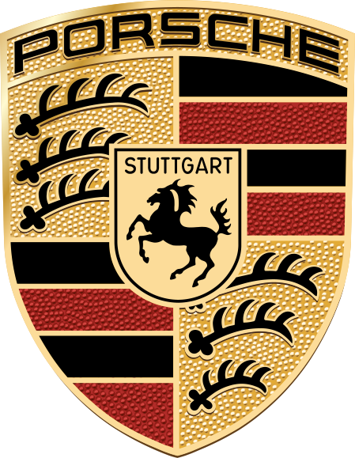

- porche 911
- porche 718
- porche Taycan

Porche
Dr. Ing. h.c. F. Porsche AG, usually shortened to Porsche (German pronunciation: see below),
is a German automobile manufacturer specializing in luxury, high-performance sports cars,
SUVs and sedans, headquartered in Stuttgart, Baden-Württemberg, Germany.
The company is owned by Volkswagen AG, a controlling stake of which is owned by Porsche Automobil Holding SE. Porsche's current lineup includes the 718, 911, Panamera, Macan, Cayenne and Taycan.